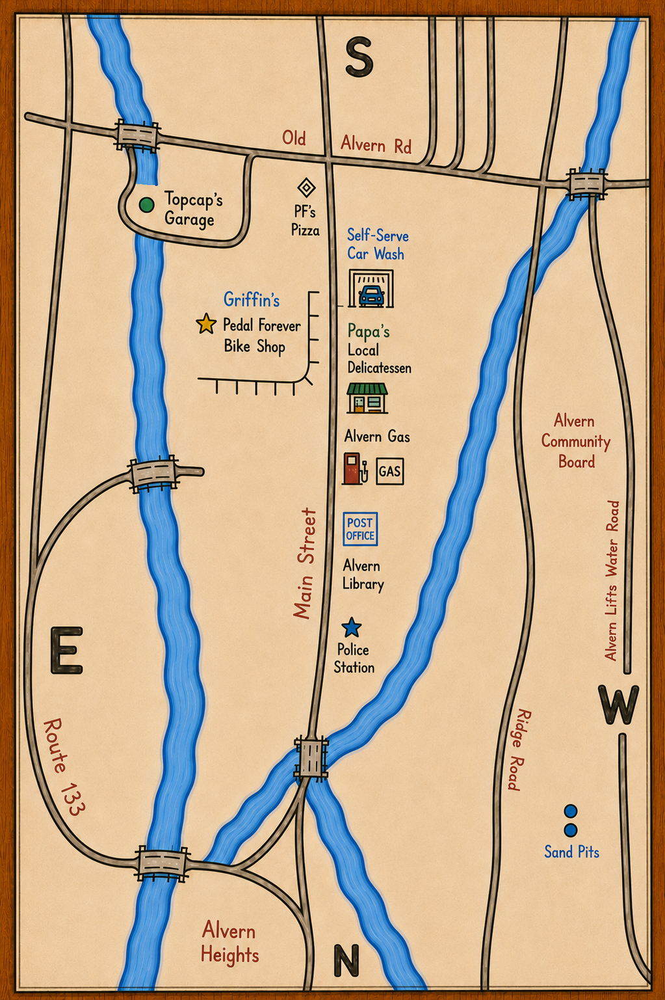

Built on BMX, bad decisions, pizza grease, and surviving another night.

PF Pizza Griffin’s Car Wash Papa’s Alvern Gas Library Police Sand Pits Scotch Row ?The unofficial headquarters of Alvern Heights. Known for late-night deliveries, BMX arguments, and grease stains older than most riders.
Restoration shop, museum, survivor sanctuary, and accidental gathering place for every BMX disaster in town.
Where Officer McCarthy cleans the cruiser, loses his patience, and pretends he isn’t watching the PF Pizza parking lot.
Small-town food, local gossip, and probably the first place someone heard Pinchbolt Pete was up to something.
Fuel, bad coffee, questionable snacks, and the last stop before every terrible idea becomes official.
Quiet on paper. Somehow still full of BMX rumors, old newspaper clippings, and town history nobody agrees on.
Constantly attempting to stop Pinchbolt Pete. Constantly failing.
Illegal jumps. Burnouts. Broken frames. Some of the best stories in Alvern started here.
Steep abandoned mill-service road hidden along the edge of Alvern Heights.
Drainage slalom lines. Fast downhill runs. No guardrails. No forgiveness.
Nobody’s been man enough to do Scotch Row since Ted did it.
I still miss Ted.
Officially, it does not exist.
Hidden beyond the old drainage system near Scotch Row, Zone 76 was sealed sometime in the late 1980s.
Most people think it was an abandoned utility tunnel. Others swear it was something much worse.
Public access permanently restricted.